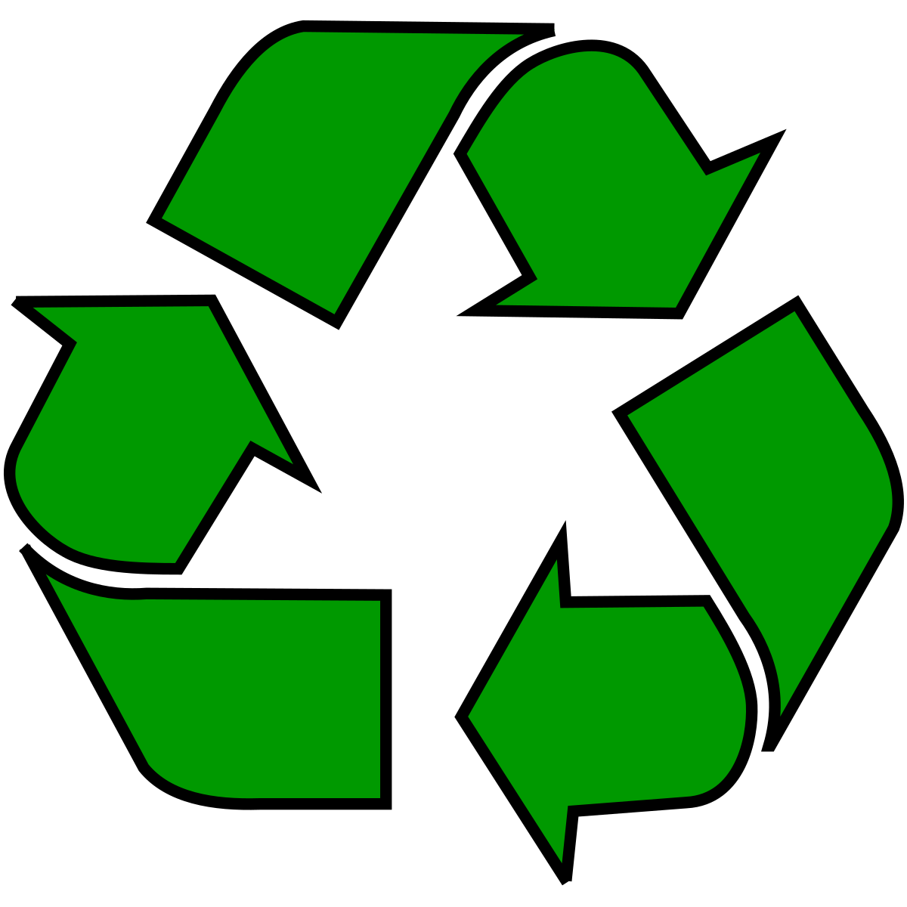
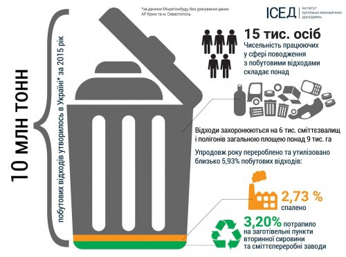

За даними Мінрегіонбуду, торік в Україні (без урахування даних АР Крим та м. Севастополь) утворилось близько 10 млн тон побутових відходів. Вони захоронювались на 6 тис. сміттєзвалищах і полігонах загальною площею понад 9 тис га. При цьому перероблено та утилізовано лише 5,93% побутових відходів, з них: 2,73% спалено, а 3,2% - потрапило на заготівельні пункти вторинної сировини та сміттєпереробні заводи. Не важко здогадатися, що утворення відходів у таких обсягах і такими темпами, дуже скоро призведе до появи нових звалищ, які ми швидко наповнюватимемо відходами. І це безкінечний процес, якщо не змінити систему управління ними.
Ієрархія пріоритетів у сфері поводження з відходами - це чітка структуризація дій щодо поводження з відходами. Ці дії потрібно запроваджувати у такій послідовності:
1. Запобігання;
2. Підготовка до повторного використання;
3. Переробка;
4. Інший тип утилізації, напр., для відновлення енергії;
5. Ліквідація (видалення).
У Європі на ієрархії пріоритетів поводження із відходами побудовані всі програми та плани поводження з ними. Сподіваймося, в Україні скоро теж будуть впроваджені ці принципи. Система поводження цікава ще й тим, що вона добре працює, як на макрорівні, так і на мікрорівні.
Ієрархія пріоритетів у сфері поводження з відходами у домогосподарствах:
1. Відмовся від поліетиленового пакетика у магазині (запобігання).
2. Використовуй тару для зберігання продуктів кілька разів (повторне використання).
3. Здай скло, пластик і папір на переробку (переробка).
4. Віддай бабусі папір для розпалювання печі (відновлення енергії).
5. Лише те, що не вдалося застосувати у попередніх діях, викидай на смітник (видалення).